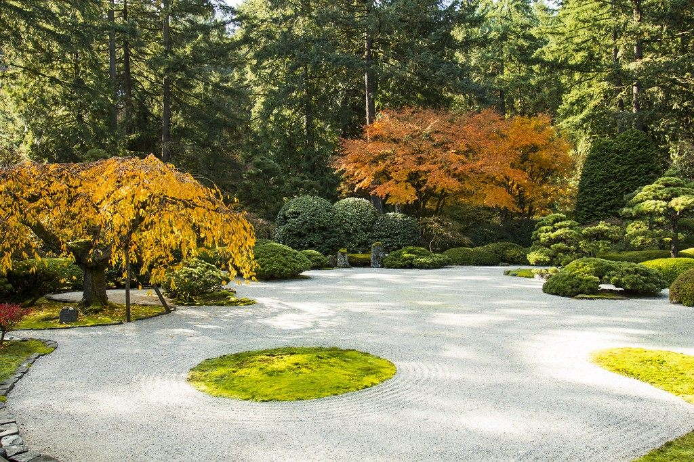

TEA SALON
一輪の椿のように、
一輪の椿のように、
静かなお茶のひとときを。
佐賀県嬉野市、和多屋別荘内の日本茶サロンTSUBAKI。嬉野の銘茶と和菓子で、心静まるひとときをお過ごしください。

佐賀県嬉野市、和多屋別荘内の日本茶サロンTSUBAKI。嬉野の銘茶と和菓子で、心静まるひとときをお過ごしください。
地元嬉野茶の魅力を最大限に引き出した一杯を、丁寧にお淹れします。
老舗旅館の落ち着いた雰囲気の中で、日常を忘れるひとときをお過ごしいただけます。
地域の皆様や旅行者の方々から高い評価をいただいています。何度でも訪れたくなる空間を目指しています。
Photo: イメージ
Photo: イメージ